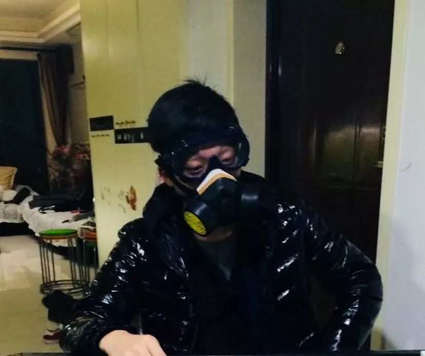
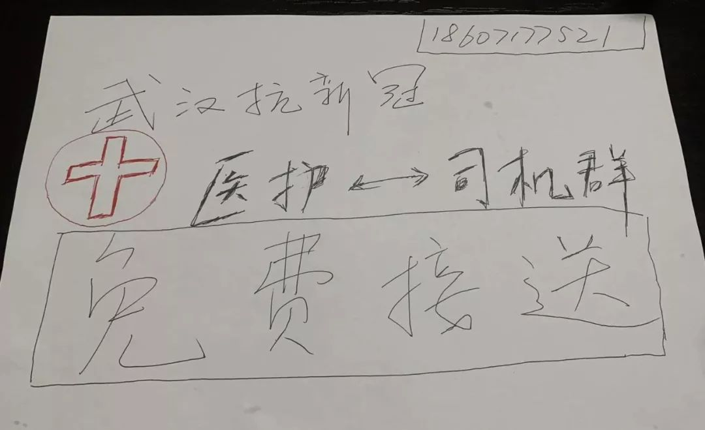
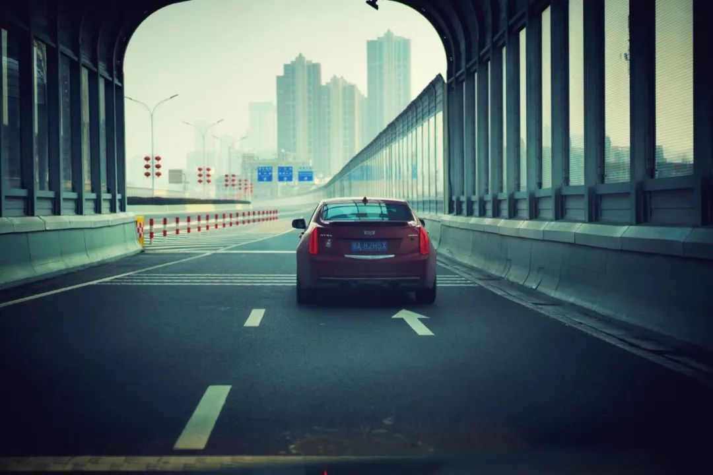
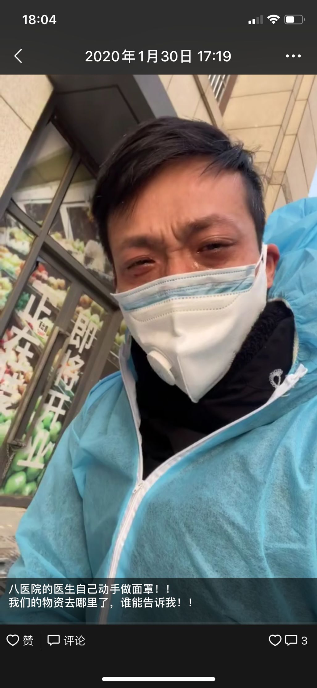

武汉支援医护车队司机自述：初一凌晨两点，我接到了去医院的第一单 | 深网
原文链接 备份链接 作者 | 相欣 编辑 | 康晓 出品｜深网·腾讯小满工作室 欢迎下载腾讯新闻APP，阅读更多优质资讯 编者按：通过湖北各城普通民众的视角和抗疫行动，记录这一段我们永不会忘记的历史。是为抗疫日记系列之二，来自武汉支援医护 …

口述 黄晓民
采访 张瑾

联系到黄晓民时，已是 2 月 2 日晚上 8 点多，他刚协调完一批送给医院的物资回到家中。电话那头传来咳嗽声。
黄晓民，38 岁，南国地产的一名市场推广。1 月 23 日成立武汉 123 志愿者车队，24 日开始接送医护上下班， 28 日由于志愿者团队缺乏防护物资，存在安全隐患，他决定中止这项行动。11 天里，他组建了 5 个微信志愿者群（因防护装备不足解散了 3 个），召集了 174 位司机，接送 200 余位医护人员上下班。中止行动后，他并没有宅在家中，仍旧奔波在外，为医院、志愿者筹集各类物资。
11 天里，黄晓民和朋友们见证了许多的恐惧和勇气，他们也害怕，但想要证明一点：武汉人不是大家说的全部都是逃兵。
采访过程中，一直能听到隐隐约约的咳嗽声，黄晓民说没事，开玩笑称自己是最大的「毒源」。


以下是他的自述：
从南国中心到我家，会路过 4 家医院，晚上加完班回家我就经常看到有一些医护人员下夜班后拦车挺困难的，当时我想其实我可以顺一脚。
去年 12 月份的时候，陆陆续续听到一些消息：有人得肺炎了、华南海鲜市场有问题，但当时没当回事，因为政府出来说，这个病不会人传人。今年 1 月份，（消息）越传越多，我就开始警惕了。2003 年非典的时候，我在上大学：中南财经政法大学，当时武汉虽然不是疫区，但我们通过新闻，也知道很多非典幸存者是很痛苦的，当时传这个肺炎和 SARS 有点像，我估计也是那种「哪怕治好了，也要丢半条命」的病，就开始做防护了，但也没太在意。
18 号的时候，我们一个大家族 12 个人聚在一起，在我工作的地方——南国中心吃了年夜饭，现在想想真的有点后怕。那天，百步亭社区还举办了万人宴。唉！
虽然消息不畅通，但是民间还是很有方法打听的，消息是封不掉的。1 月 20 号，我在网上看到有一个来过武汉的阿婆死了，我开始慌了，立马跟我的家人、同事讲，要戴口罩。但是戴的人不多，在我上班的商场里都没几个人戴。

所以 1 月 21 号，我就戴着防毒面具自拍了一张发了个朋友圈，那个防毒面具是我打麻将戴的。我平时从来不抽烟，也不能闻，闻到就很难受，哥们打麻将喜欢抽烟，我就戴个这个，他们还笑我：怕死。我是真的很怕死。
1 月 23 号凌晨，武汉宣布封城，城内公交停运，我很快想到他们（医护人员）要怎么上班？当天晚上就建了一个「武汉医生出行互助群」，找来同事、同学还有乙方合作伙伴一起做司机志愿者。朋友圈一发，当天晚上就有很多人扫码进来了。现在想想，这大概是我做过的最成功的一个拉人头的宣传吧？其实，那天我也想离开武汉，高速还没有全封，我来得及走。但家里就我一个壮丁，外婆 93 岁了，小姨 62 岁了，爸妈 64 岁了，表弟之类的都不在武汉，万一老人们有个什么事，我该怎么办？所以我一早就把父母接到我家来了。
随着越来越多热心志愿者的加入，123 志愿车队已经有 100 多个司机，从 1 月 24 号到 28 号，我们每天接送约 200 名医护上下班。但现在已经不送了，不能再送了。武汉的情况越来越严重了，我担不起这个责任。

取名「123 车队」是因为封城的日期，也因为「1、2、3」像一个开始行动的信号，反应速度快，后来我发现和武汉话的「管得宽」挺谐音。有的时候，我们这些人，管得是挺多的。
23 号当天夜里我就接了一单，一开始没有帽子和护目镜，我戴上泳帽泳镜就上阵了，没想那么多。后来，坐我车的医护人员跟我说，你这个防护措施不行啊，会有问题的。一个年轻护士送了我防溅面罩，志愿者给我们送来隔离服、口罩，还有一间小便利店，他们进到了 84 消毒液的货，专门为我们留了两箱。我们的装备渐渐齐全。一位 62 岁被返聘的老医生告诉我，在我们车队接送之前，他要骑两小时一刻钟的自行车上班。
我太太在封城前，就带着 1 岁多的女儿回黄石老家过年。我 23 号发微信告诉她想要做车队，她先是沉默了几分钟，然后我就给她讲了很多医护人员的状况：工作了一夜还要等班车，而且大医院才有班车，社区卫生服务中心没有……，他们有的要走两三个小时才能回家。后来她就给我回：你去吧。我也不能去一线治病，也不能去工地建医院，所以我就想做一点小事：开车。

有些司机是瞒着太太出来的，我的同学让我发朋友圈千万不要提到他，他是跟太太说是出来打麻将的、去钓鱼的，麻将搭子都很健康，戴着 N95 口罩。
开车的时候，我都开一半窗户，因为我记得非典那个时候就说要勤通风、勤通风，所以我每天开车都把窗户打开，武汉这几天还是挺冷的。我的咳嗽可能就是吹风感冒的，我希望是。
差不多第三单的样子，我接了武汉市中心医院后湖院区的两个护士，她们两个都是 95 后。其中一个护士跟我说，确诊的第一例就在她的病区，床号 27，她还护理过好几次。我问她怕不怕？她说当然怕啊。然后我们就沉默了，不知道该说点什么。
医护人员真的很累也很不容易。有一天早上 7 点钟，我接一个护士下班，她上车直接就倒在后坐睡着了，幸好我知道她住在哪。开车的我就在想，这是有多累？能在一个陌生的男人车上放心地睡觉？感觉很心酸……回去后，我就在司机群里公布了一条规定：所有司机必须把三证（身份证、驾驶证、行驶证）一单（保险单）拍给我，否则踢群。这也是我能为医护人员做的一点小事了。一位医生请我们去接他的父亲，因为他和父亲要去不同的医院服务，他没法照顾到父亲上班。
一位年轻的协和医院护士，她也不是属于呼吸科感染科，但她说等火神山、雷神山医院建好，她要主动请缨过去前线。
很多医生护士下车的时候，直接丢下 100 块现金，或者微信上发红包，我们都是不收的，有时候我还会倒给她们红包。让他们加油。

为了防护，我们要求医护和司机尽量少交谈，而且大家都是陌生人，车上总是很安静。我等红灯的时候会跟他们讲一下话。我问过一个护士等疫情过去，她最想干嘛？她说想好好喝口水，再睡 48 个小时。因为他们总是穿着防护服，物资紧缺，一天不敢喝水。
除了接送医护人员，我作为志愿者车队的队长，还会想方设法地去筹集物资、送到医院、发给志愿者。所以我家就像一个运输中转站一样，有很多东西，经常也有人到我们家来拿东西。每个人戴着口罩，互相也不认得，大家都很少话但动作迅速。

25 号那天，我去武汉市中心医院后湖院区送物资，我搞到一些酒精，就想着送过去帮他们一下。急诊台前站了七八个护士，我说「你好，我是志愿者黄晓民，我来捐两箱酒精。」接待我的护士有点懵，跟我说「你等一下，我去找一下我们护士长。」我就站在急诊室里，无数的病人在我周围。
左边，一位护士安抚一位高度疑似感染者，没有检测盒没法确诊。护士安慰他「你冷静一点」，他用武汉话大喊「老子怎么冷静？」，右边是等着看病的人在排队。地上也坐了很多人，因为市内的交通停了，很多人来医院都要走一两个小时，急诊室又没有那么多的凳子，他们站不住，只能坐在地上。
那一瞬间，我真的觉得可怜又渺小，我什么也做不了，我只能开车。我没等护士长来，我把酒精放在急诊台上就走了。在那样的环境里，我待不住，我得走。
最长的一天，我戴了 6 个小时手套没有换，穿了 13 个小时的防护服。来回大概 11 趟，送了大概 20 多个医护人员。武汉大，真的太大了。这个时候，就希望自己的城市小一点。
我最近微信里多了 1200 多个人，绝大部分都不认识，但是大家真的都很热心，就是有一种什么感觉呢？病毒在这个月内疯狂地缩小包围圈，把我们圈住了。

27 号有一个单，是要从武汉第八医院去江夏区，全程 30 公里，刚看到我还担心这个单没人接，但很快就有司机说：没人去，我去！24 号，群里开始接送的时候，我就在群里跟司机说了，你们有困难的，我一单补贴你们 20 块钱，但是没人来跟我要这个钱。我们不像滴滴，滴滴司机平台一天补贴 1000 多，我们油钱都是自己掏。
合作的设计公司免费为车队设计了队标，后勤志愿者打印好，大家分头去取，贴在车子挡风玻璃下方，交警看到我们的标志，都会放行。

中心医院的急诊护士说，有一对新婚夫妻，才装修好的婚房就在中心医院后湖院区附近的小区，他们把新房免费给医护人员住，连一点押金都不肯收，这个事我觉得自己都做不到。
我作为队长，有的时候，要在群里安慰一些队友的情绪，所以我大部分时候是乐观的。但有的时候，我也会崩溃。
1 月 28 号是疫情爆发期，武汉新增了 800 例确诊。其实那天我特别高兴，因为我搞到了 4 箱隔离服，一共 200 件，我想着赶紧送到医院和社区去。但后来在手机上看到确诊的数字在一个个增加，我心里开始发愁了，我感觉到压力特别大，哭了两次。这个 123 车队是我发起的，但我没法为志愿者的生命安全负责，所以我就写一个《告司机朋友书》和《告医护人员书》。我一个个跟医护人员解释：我们志愿者没有防护措施，所以从 1 月 29 号开始，暂停接单，当我们能获取 EN14126type4 级别以上的防护服和 N95 口罩时，如果城市还需要我们，我们会继续接送医护人员。
30 号那天下午，我又搞到 10 箱酒精，液体黄金啊！很兴奋就发了个朋友圈：「见到酒精比见到酒开心」，然后我就收到一条微信，是一个第八医院的医生发给我，我记不得我有没有接送过他了。「你能送一点酒精给我们八院吗？我们这里物资很缺乏。」随后，他给我发来了他们科室用文件袋、胶带纸自己做防护面罩的照片，我知道物资缺乏，但我没想到这么缺乏，战士上战场别说没有机关枪和子弹，连矛和盾都没有啊！

「我们的物资去哪里了？谁能告诉我？」那一刻，我真的受不了，蹲在地上大哭了一顿，上半身隔离服全湿了。

最近这段时间，我的心态一直在变化，最开始（23 号晚上）我没想怎么样，我就是想帮助一下那些医护人员，我很平静。24 号开始患者人数越来越多，我开始兴奋了，毕竟我的本职工作是做市场推广的，28 号我真的怕了，很为难，我只是一个普通人，没钱没地位没关系。30 号彻底崩溃了，看到我们的物资被红会积压着！现在我又恢复了平静，就想着能做一点是一点吧。疫情结束之后，我只想开车回黄石，好好抱抱我的女儿，我真的很想她。我还想把这个 123 志愿者群保留着，去帮助残疾人、老人……
我没有像大家说的那么伟大、勇敢，我就是想证明一点：武汉人不是大家说的全部都是逃兵，往外面逃跑的传染源，空投到世界各地；还有很多像我们一样连武器都没有的战士在拼命作战。

C O N T R I B U T O R S
责编：Neil
执行：玉宣

fine直击NEIL BARRETT米兰秀场，和王子异聊了33个真心话
秀场很厉害，“超模异”很能聊

郭京飞 | 原汁原味的服务者
“我就是一个摇滚少年，没火找火，然后又想方设法去解决自己的愤怒。”
__________________


**给我好看！ **
**
原文链接 备份链接 作者 | 相欣 编辑 | 康晓 出品｜深网·腾讯小满工作室 欢迎下载腾讯新闻APP，阅读更多优质资讯 编者按：通过湖北各城普通民众的视角和抗疫行动，记录这一段我们永不会忘记的历史。是为抗疫日记系列之二，来自武汉支援医护 …
原文链接 备份链接 27.01.2020本文字数：1459，阅读时长大约2.5分钟 导读：“我生活在武汉，我热爱武汉。只有城市健康了，我们居民才会有舒适的小日子。” 作者 | 第一财经 刘佳 清晨6点的武汉，天还没亮，身穿黄色防护服、戴 …
原文链接 备份链接 数据来源：腾讯新冠肺炎疫情实时追踪 截至2月3日早上7时， 全国新冠肺炎确诊个案16615例， 武汉确诊个案5142例。 根据1月31日湖北省疫情新闻发布会， 截至30日24时， 武汉地区共有6万余名医务工作者参与救 …
原文链接 备份链接 封城，已经过去了一周。市内交通停运、机动车中心城区限行，让这座现代城市里习惯了汽车、地铁出行的人们突然之间陷入寸步难行的境地。 文 | 陈星萌、薛雨霏、谢婵、高逸佳 编辑 | 小豆 自1月23日10时武汉封城，到今天 …
原文链接 备份链接 武汉“封城”后公共交通停运，自1月24日开始，路上开始出现民间自助形式的车队。私家车主轮班，车队昼夜不停，每天接送医护人员、运输医疗物资，每送一趟要用75%酒精浓度的消毒液喷洒一遍车辆，油钱、防护口罩、消毒液都自掏腰 …